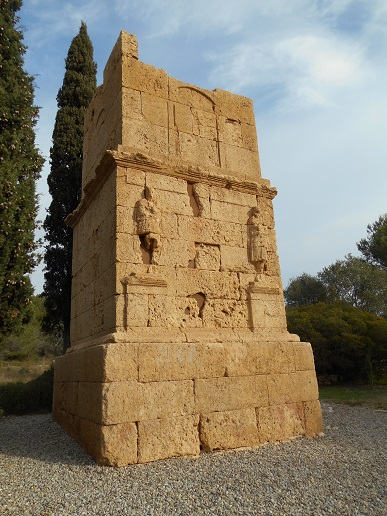

TORRE DE LOS ESCIPIONES
Constituye uno de los monumentos más emblemáticos de la ciudad. Situado muy cerca de la Vía Augusta, a unos 6 km de Tarragona, se trata de un típico ejemplo de monumento funerario turriforme.

Presenta una planta casi cuadrada de 4,47 x 4,72 m. en la base. Consta de tres cuerpos superpuestos, decrecientes en dimensiones. El intermedio presenta en la fachada dos figuras en relieve que representan a Atis, divinidad de origen oriental asociada al culto funerario. Una errónea identificación de estas figuras con los hermanos Escipión dio origen a la tradicional denominación del monumento. Por sus características constructivas se supone que fue construido durante la primera mitad del siglo l.
Seguramente estaba rematado por una cubierta piramidal. La construcción se conserva con una altura total de 9’17 m.